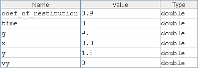
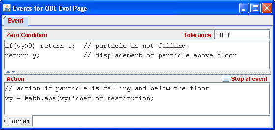

The Free Fall model uses 6 variables having their usual meaning. The variable g is the acceleration new Earth's surface due to gravity in m/s2. The coefficient of restitution is used to reduce the speed of the falling object at each bounce.
Numerical algorithms for solving second order differential equations, such as Newton's Second Law, usually require that the differential equation be rewritten as a system of first ordinary differential equations. This is a straightforward process if we introduce a variable for each velocity component. Because the ball's motion occurs only along the y (vertical) axis, we introduce the variable vy. For the simple Free Fall example the differential equations for vertical position y and velocity vy can be written as:
Differential equations for position y and the velocity vy are entered on the Ejs Evolution page.
Modeling the bounce requires an Ejs event that is triggered when the ball passes through the table top. An Ejs event occurs when the event's zero condition becomes negative. Because the table is located at y=0, we can use the y-position of the ball to trigger the event.

If the ball is below the floor and if the velocity is downward, the zero condition is negative and the event's action takes place. Note that Ejs automatically determines the time of the event (to within the given tolerance) before applying the action. The time evolution will then continue unless the Stop at event box is selected. In the Simple Free Fall model, the event's action diminishes the speed of the ball and causes the ball to move upward.